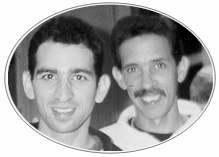

El 21 de Noviembre de 1995, el Dr Adrian Bruckman junto a otros médicos cubanos realizó el Brit Milá a 14 miembros de nuestra comunidad, seis de los cuales eran niños. El último Brit Milá en Santiago de Cuba había sido efectuado 20 años atrás.
|
|
|
|
|
El 21 de Noviembre de 1995, el Dr Adrian Bruckman junto a otros médicos cubanos realizó el Brit Milá a 14 miembros de nuestra comunidad, seis de los cuales eran niños. El último Brit Milá en Santiago de Cuba había sido efectuado 20 años atrás. |
Tan sólo una semana después, seis de estos hombres contrajeron nupcias bajo la Jupá. Los dos rabinos que días atrás habían legalizado la identidad judía a varios miembros de la comunidad, fueron los encargados de santificar a estas parejas en sagrada unión matrimonial.
Luego de intensas actividades a lo largo de todo un año fue fecha de especial alegría Diciembre de 1996, cuando Andrés Novoa Álvarez y Roberto Novoa Bonne, bajo supervisión rabínica, celebraron su Bar Mitzvá. El período de preparación fue corto, pero grandes sus exitos. Este importante acontecimiento fue remarcado por los 33 años en los cuales no hubo un servicio semejante.
En mayo de 1996 la Sra. Rebeca Botton Behar, presidenta de la comunidad, tuvo el alto honor de ser inivitada a partipar en un Congreso Internacional de Mujeres en Israel, donde le fue entregada la condecoración "Leona de Judá".
En Julio de 1997 un jóven de nuestra Comunidad: Marcos Frómeta Farin, junto a dos jóvenes de La Habana, acompañaron al Dr. José Miller como la Delegación Cubana a las Macabiadas celebradas en Israel. Marcos tuvo el honor de portar la bandera cubana. En Agosto, Andres Novoa Castiel y Jorge Rivero Behar asistieron, por invitación de la Congregación Netivot Shalom de Berkeley, California; a la 22 Conferencia del CAJE (Coalición para el Desarrollo de la Educación Judía) celebrada en la Universidad de Stanford en Palo Alto, California.

Haga Click aquí para ver más sobre nuestra visita a California
Con fecha 20 de Octubre de 1997, celebramos la publicación de la historia de nuestra comunidad, "Sinagoga de Santiago de Cuba", con su autora Eugenia Farin Levy.
Pocos días después, Eugenia Farin Levy, vicepresidenta de nuestra comunidad, viajó como delegada al Sexto Encuentro de Dirigentes de Instituciones Judías Latinoamericanas que se desarrolló en la ciudad de Mar del Plata, Argentina.
El viernes 7 de Heshvan (7 de Noviembre), la señora Farin trajo un Sefer Torá que permaneció guardado en la sinagoga Adath Israel en Ciudad de La Habana. Este Sefer Torá originalmente arribó a nuestra ciudad a principios de siglo. Fue traído desde Turquía en manos de los fundadores de nuestra comunidad. Calculamos su edad en más de un siglo.
| Página Principal | Historia de la Comunidad | Sinagoga de Hoy | Eventos Importantes |
| Comunidad Hebrea Cuba |